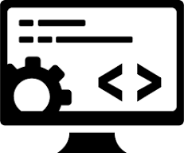
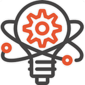
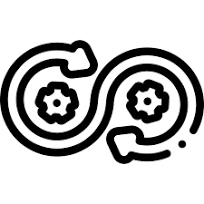

Programming
-
OOD: For modular, maintainable, and
scalable applications.
-
Python: For back-end development, data
analysis tools, and machine learning models.
-
JavaScript: For Dynamic and interactive
front-end experiences, SPAs, and web applications
-
React: To leverage component-based
architecture for efficient code reusability and faster
development.
-
Front-End: HTML, CSS, Grid, Flexbox &
Bootstrap for visually appealing and user-friendly
interfaces with responsive design across various devices.

Technologies
-
AI Chatbots (Data-Driven): With Python API
interfaces to extract insights from large language models,
enabling data-driven decision-making.
-
Databases: SQL and Graph Relational
(Neo4j): for managing interconnected data with complex
relationships./li>
-
NLP: GATE, NLTK, spaCy, Scikit-learn:
Popular libraries toolkits for text processing,
tokenization, named entity recognition, sentiment analysis.
-
WEB 3.0 (Semantic Web): RDF for structured
data representation, SPARQL for efficient querying and
Protégé for knowledge modeling.

Best Practices
-
IDE's: Intellij Idea, Pycharm, Visual
Studio Code: Development efficiency, refactoring, debugging,
...
-
Version Control: Git and GitHub for
efficient version control and collaboration, code tracking,
...
-
Automatic Testing: unittest, pytest to
ensure code quality and functionality throughout the
development process.
-
CI/CD: GitHub Actions for streamlined
development, testing, and deployment of applications.
-
Agile Methodology: to foster iterative
development, close collaboration with clients, and
continuous improvement.
 ITD2/Application Developments
ITD2/Application Developments